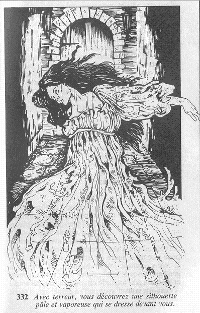

Au bout du balcon, se trouve une solide porte en bois. Alors que vous vous demandez si vous allez essayer de pénétrer dans cette nouvelle pièce, un bruit provenant de derrière vous, vous fait sursauter. Vous vous retournez vivement, et poussez un soupir de soulagement en constatant qu'il ne s'agit que d'un courant d'air qui agite des tapisseries pendues au mur. Votre crainte n'était pas fondée, et vous vous tournez vers la porte. Avec terreur, vous découvrez alors une silhouette pâle et vaporeuse qui se dresse devant vous.  L'apparition est celle d'une jeune femme d'une vingtaine d'années, à la longue chevelure. Elle est vêtue d'une robe blanche de mariée qui a dû voir de meilleurs jours car elle est froissée et déchirée. « Dieu merci, je vous ai trouvé à temps, dit-elle. Je dois vous parler sans perdre un instant. Venez, entrons dans cette pièce. » Allez-vous la suivre comme elle vous le demande ou, redoutant un piège, préférez-vous faire demi-tour ? Quel que soit votre choix, vous ajoutez un point à votre total de PEUR pour cette rencontre.